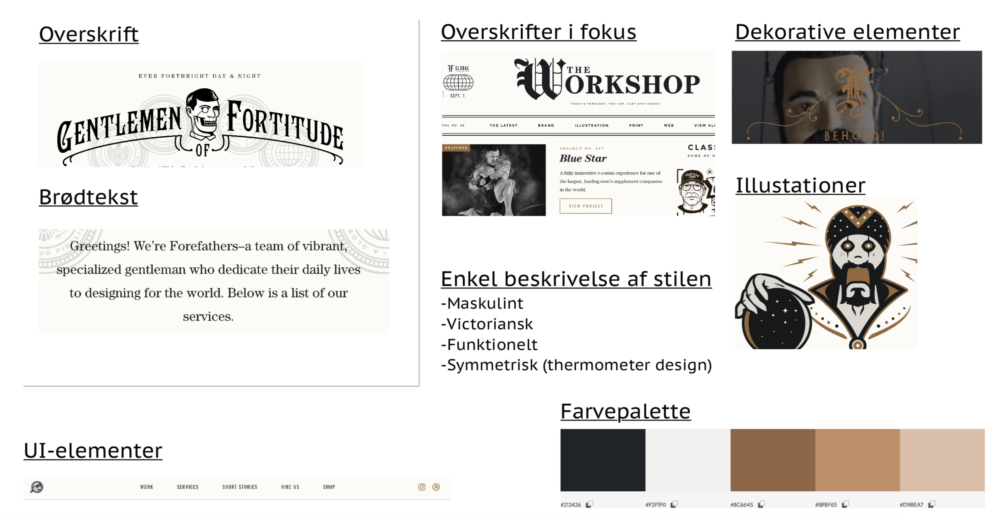
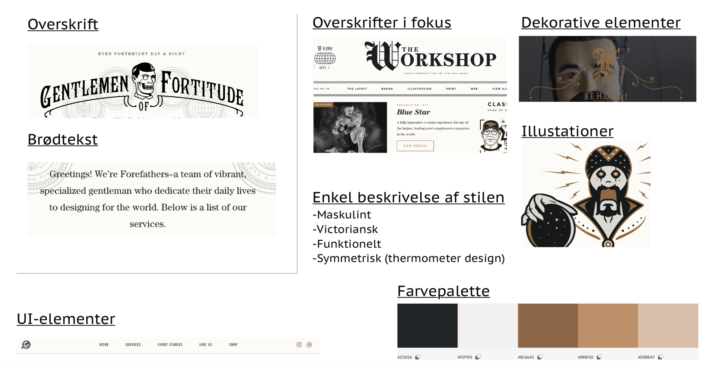

Grundlæggende web - Responsive site v2
00.
På tema 2 – Grundlæggende web, skulle vi programmere vores første responsive site. Før vi gik i gang med vores egen site, blev vi introduceret til de forskellige stilarter i webdesign, og lavede vores første moodboard og styletile ud fra en tildelt stilart, jeg fik Hipster/retro design. Vores egen responsive site skulle designes ud fra vores tildeltte stilart og følge en given wireframe. Vi lavede vores egne splashbilleder og ikoner til vore site ellers var Sitets indhold ikke vigtigt. Det skulle mest bestå af placeholder tekst og billeder.
01. moodboard og styletile ud fra hipster/retro design
 

02. mockup i adobe xd ud fra given wireframe